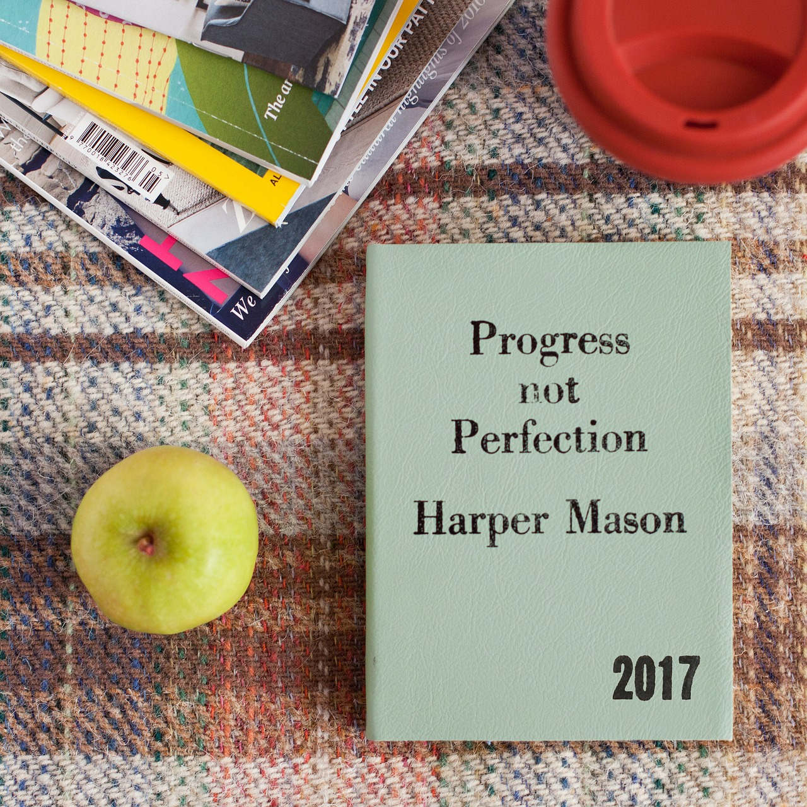

Ramiro Villagrana Gutierrez
Home
About
Gallery
This image shows an inspirational quote that states the importance of setting priorites

This is a quote that I can connect to as it supports the idea that making mistakes is important